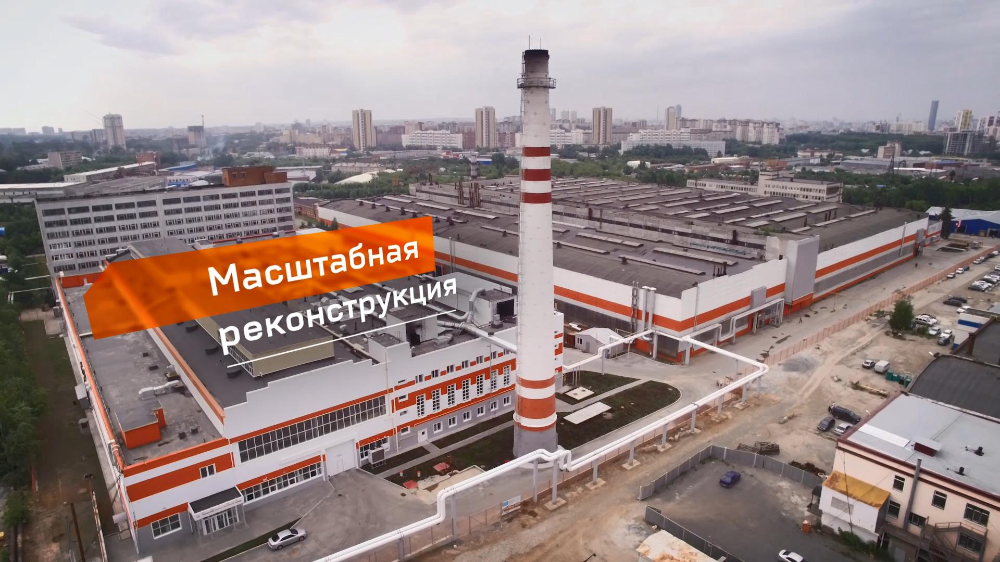

PR видео
Видео-презентации и фильмы для брендов и промышленности.
Видеофильм — это точная и эмоциональная подача информации для целевой аудитории. Мы комбинируем живую съёмку, 3D-графику, инфографику и режиссуру, чтобы получить понятный и убедительный результат.
Форматы: широкоформатная видеосъёмка, аэросъёмка, съёмки сложных объектов, монтаж под задачу.

Промышленная видеосъёмкаФорматы
Собираем сценарий, съёмку и постпродакшн в единую систему.
FullHD/4K
Промышленная съёмка
- Объекты, техника, инфраструктура
- Съёмка с высоты и крана
- Монтаж под задачу
3D
Инфографика и 3D-анимация
- Сложные процессы — в понятных схемах
- Комбинация с видео
- Сценарий и визуализация
Архивные кадры
Добавляем медиа из архивов, чтобы ускорить производство.

Кадры производственных объектов.
Индустриальные проморолики.
Видео из VK
Здесь будет автоматическая подгрузка видео из профиля VK.